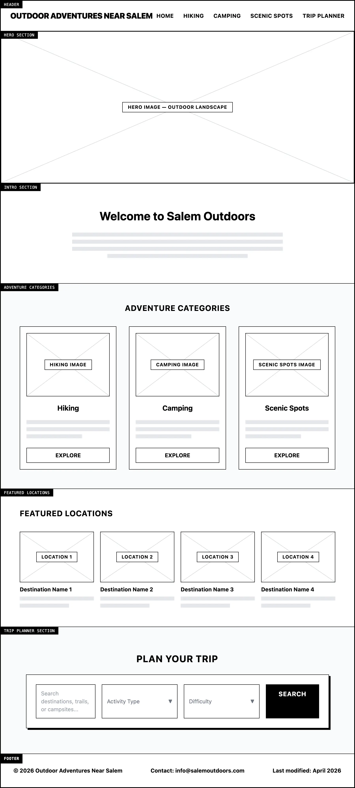
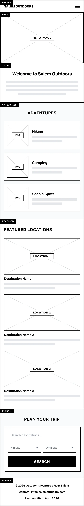

Site Name
Outdoor Adventures Near Salem, Utah
This name clearly describes the purpose of the site. It focuses on outdoor recreation opportunities in the Salem, Utah area including hiking trails, camping areas, and scenic locations. The name is simple, descriptive, and easy for visitors to understand.
Site Purpose
The purpose of this website is to provide information about outdoor activities near Salem, Utah. The site will help visitors discover hiking trails, camping areas, scenic viewpoints, and other outdoor destinations in the region.
The site will include trip-planning information, images of destinations, and helpful descriptions of each location. Visitors will be able to browse different outdoor adventures and find ideas for exploring the area.
Scenarios
- What hiking trails are located near Salem, Utah that are good for families?
- Where can I find scenic outdoor locations near Salem for camping or photography?
- What outdoor destinations near Salem are easy to access for a short day trip?
Color Schema
These colors represent natural outdoor themes such as forests, landscapes, and open spaces.
#2C6E49
Headings, navigation, accents
#F5F5F5
Page background
#4C956C
Buttons and highlights
Typography
The site uses two fonts that are clean and easy to read.
Oswald Font Sample
This font will be used for headings and titles on the website.
Roboto Font Sample
This font will be used for the main body text and paragraphs throughout the website.
Wireframes
The following wireframes show the planned layout for the home page in both desktop and mobile views.
Desktop View

Mobile View
